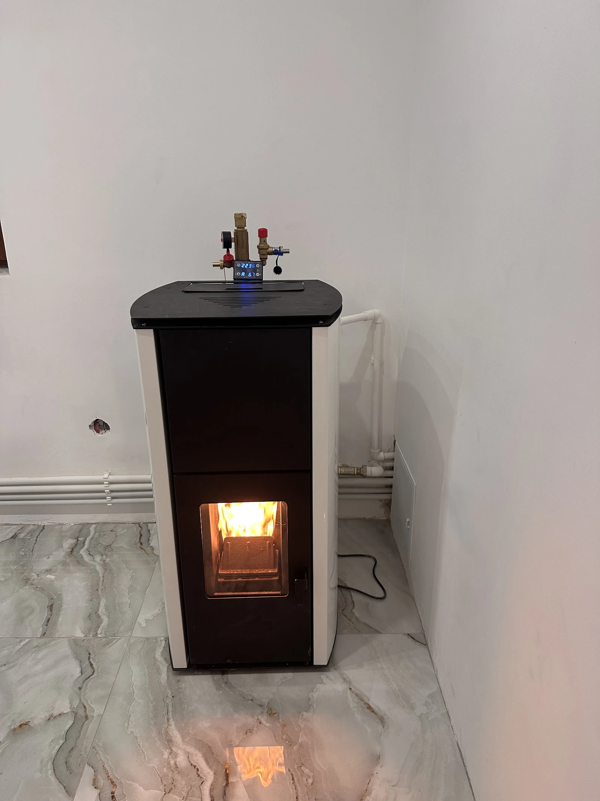

{{instalator · Botoșani|installer · Botoșani|instalador · Botoșani}}
{{Casa caldă începe|A warm home starts|Uma casa quente começa}}{{cu o instalație făcută bine.|with a job done right.|com uma instalação bem feita.}}
{{Încălzire în pardoseală, centrale, calorifere și băi, montate cu răbdare și atenție la detalii.|Underfloor heating, boilers, radiators and bathrooms, fitted with patience and an eye for detail.|Piso radiante, caldeiras, radiadores e casas de banho, montados com paciência e atenção ao detalhe.}}
{{Marți 07:00–20:00 · restul zilelor:|Tuesday 7:00–20:00 · other days:|Terça 07:00–20:00 · restantes dias:}} {{de confirmat|to be confirmed|a confirmar}}

{{Sobă pe peleți montată într-o casă din lucrările lor|A pellet stove fitted in a home, from their work|Salamandra a pellets instalada numa casa, dos trabalhos deles}}
{{ce montează|what they fit|o que montam}}
{{O instalație întreagă, aripioară cu aripioară.|A whole system, fin by fin.|Uma instalação inteira, lamela a lamela.}}
{{Lucrările din fotografiile și recenziile lor. Alege una și pornește cererea de evaluare.|The jobs from their photos and reviews. Pick one and start a survey request.|Os trabalhos das fotografias e opiniões deles. Escolha um e inicie o pedido de avaliação.}}
{{Încălzire în pardoseală|Underfloor heating|Piso radiante}}
{{Serpentine și spirale pe placă, înainte de șapă.|Loops and spirals on the board, before the screed.|Serpentinas e espirais na placa, antes da betonilha.}}
{{Colectoare și distribuitoare|Manifolds|Coletores e distribuidores}}
{{Fiecare circuit pe robinetul lui.|Each circuit on its own valve.|Cada circuito na sua válvula.}}
{{Centrale termice|Boilers|Caldeiras}}
{{Centrală murală cu toate racordurile la vedere, ordonate.|Wall-hung boiler with every connection neatly in view.|Caldeira mural com todas as ligações arrumadas à vista.}}
{{Sobă / centrală pe peleți|Pellet stove / boiler|Salamandra / caldeira a pellets}}
{{Cu grup de siguranță și racorduri la instalație.|With a safety group and connections to the system.|Com grupo de segurança e ligações à instalação.}}
{{Calorifere și curățarea instalației|Radiators and system cleaning|Radiadores e limpeza da instalação}}
{{Mutare de calorifer și curățarea instalației, din recenziile clienților.|Moving a radiator and cleaning the system, from client reviews.|Mudar um radiador e limpar a instalação, segundo as opiniões dos clientes.}}
{{Baie și obiecte sanitare|Bathrooms and fittings|Casa de banho e sanitários}}
{{Montaj de obiecte sanitare și racordare, inclusiv baterii.|Fitting sanitary ware and connecting it, taps included.|Montagem de sanitários e ligação, torneiras incluídas.}}
{{din lucrările lor|from their work|dos trabalhos deles}}
{{Se vede și ce rămâne sub șapă.|You can also see what stays under the screed.|Vê-se também o que fica sob a betonilha.}}
{{ce spun clienții|what clients say|o que dizem os clientes}}
{{Prompți, punctuali, atenți la detalii.|Prompt, punctual, attentive to detail.|Rápidos, pontuais, atentos ao detalhe.}}
Recomand! A reușit să-mi ridice bateria de la baie mai sus fără a-mi sparge faianța! Lucru și profesionalism, montaj obiecte sanitare și racordare!Camelya A. · {{recenzie Google|Google review|opinião no Google}}
Recomand! Am colaborat cu această echipă pentru mutarea unui calorifer + curățarea instalației […] și am fost foarte mulțumit de experiență. Au fost foarte prompți, au ajuns la ora stabilită și au lucrat profesionist.Alejandro X. · {{recenzie Google|Google review|opinião no Google}}
Recomand cu drag! Profesionalism, […] dar și o răbdare și o atenție maximă la detalii.Liviu-Gabriel C. · {{recenzie Google|Google review|opinião no Google}}
{{cerere de evaluare|survey request|pedido de avaliação}}
{{Spune-ne ce vrei încălzit, și unde.|Tell us what you want heated, and where.|Diga-nos o que quer aquecer, e onde.}}
{{Completezi în două minute; mesajul pleacă gata scris prin WhatsApp sau SMS. Sună-i direct dacă e urgent.|Fill it in two minutes; the message leaves ready-written by WhatsApp or SMS. Call them directly if it’s urgent.|Preenche em dois minutos; a mensagem segue já escrita por WhatsApp ou SMS. Ligue-lhes diretamente se for urgente.}}
{{contact|contact|contactos}}
{{Unde și cum îi găsești|Where and how to reach them|Onde e como os encontrar}}
{{Telefon|Phone|Telefone}}
0753 808 635{{Marți 07:00–20:00. Celelalte zile:|Tuesday 7:00–20:00. Other days:|Terça 07:00–20:00. Restantes dias:}} {{de confirmat|to be confirmed|a confirmar}}
{{Sună acum|Call now|Ligar agora}}{{Adresă|Address|Morada}}
Strada Gheorghe Filipescu
710001 Botoșani